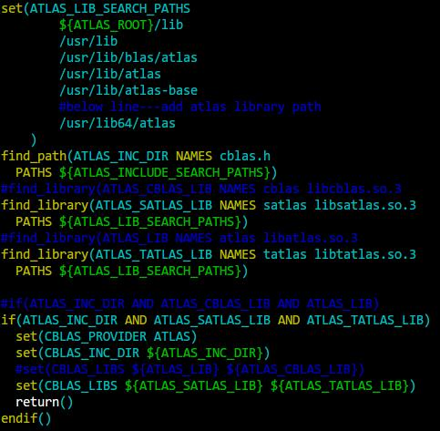

Paddle安装
Baidu Paddle(PArallel Distributed Deep LEarning)
环境： RedHat 7
依赖：
-- CMake >=2.8
-- g++ >=4.6,<5
-- BLAS: openBLAS, MKL, ATLAS(use)
-- protobuf >=2.4,not support 3.x
-- python 2.7
-- (option)(use) glog,gflags,CUDA,cuDNN,sphinx for Doc,swig for PaddlePaddle with python.
注意：编译glog时，可能需要cmake版本3.x
下载:
git clone https://github.com/baidu/Paddle paddle
cd paddle;mkdir build;cd build
cmake -DWITH_GPU=ON ..具体选项参考CMakeLists.txt文件
make -j[nproc]; make install
如果set WITH_SWIG_PY=ON，需要安装相关包pip install <path to install>/opt/paddle/share/wheels/*.whl（可能需要pip版本升级）
可能遇到问题：
- 使用atlas 3.0，原先的6个库被融合到了两个库libsatlas.so、libtatlas.so，所以需要修改$PADDLE_ROOT/cmake/cblas.make文件，如下图注释：

2.cannot find -gflags_static
paddle为了解决gflags2.1.2之前版本出现的问题（https://github.com/gflags/gflags/issues/110），在FindGflags.cmake中做了处理，所以只需要下载gflags2.1.2版本即可，目前gflags修改后的版本为2.2.0，但仍未完全改好，需要注意版本问题